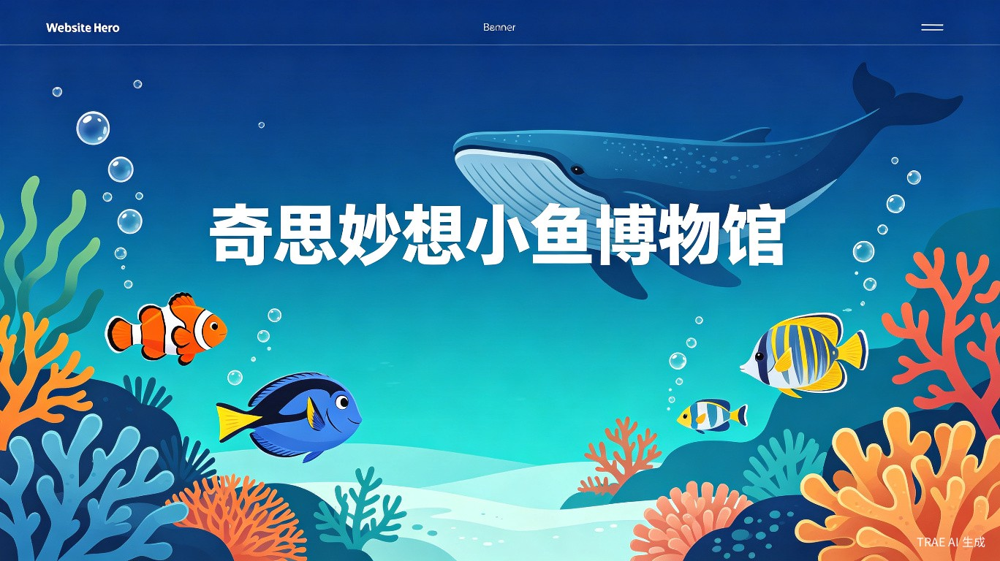
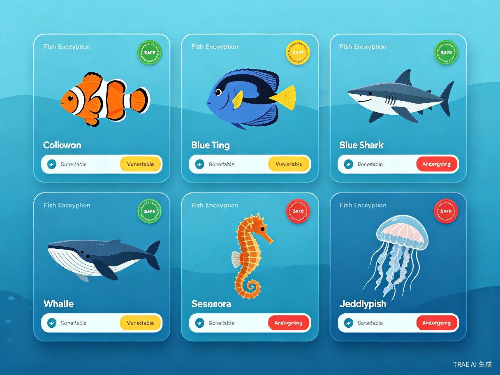
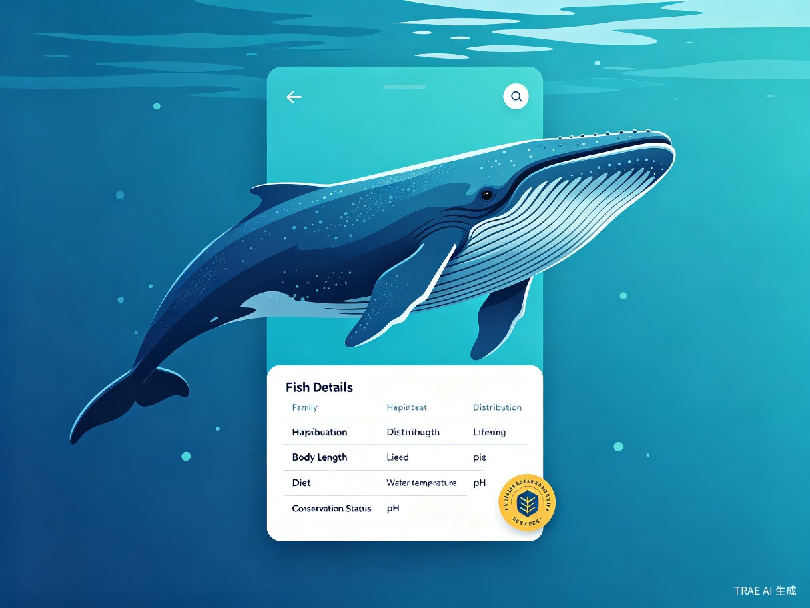
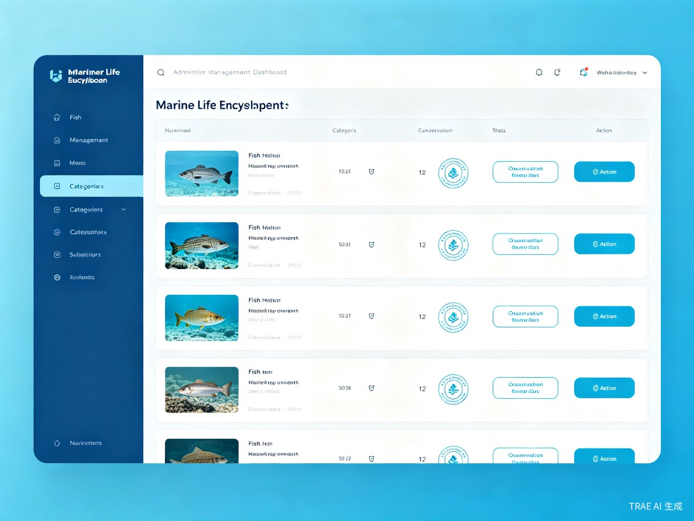
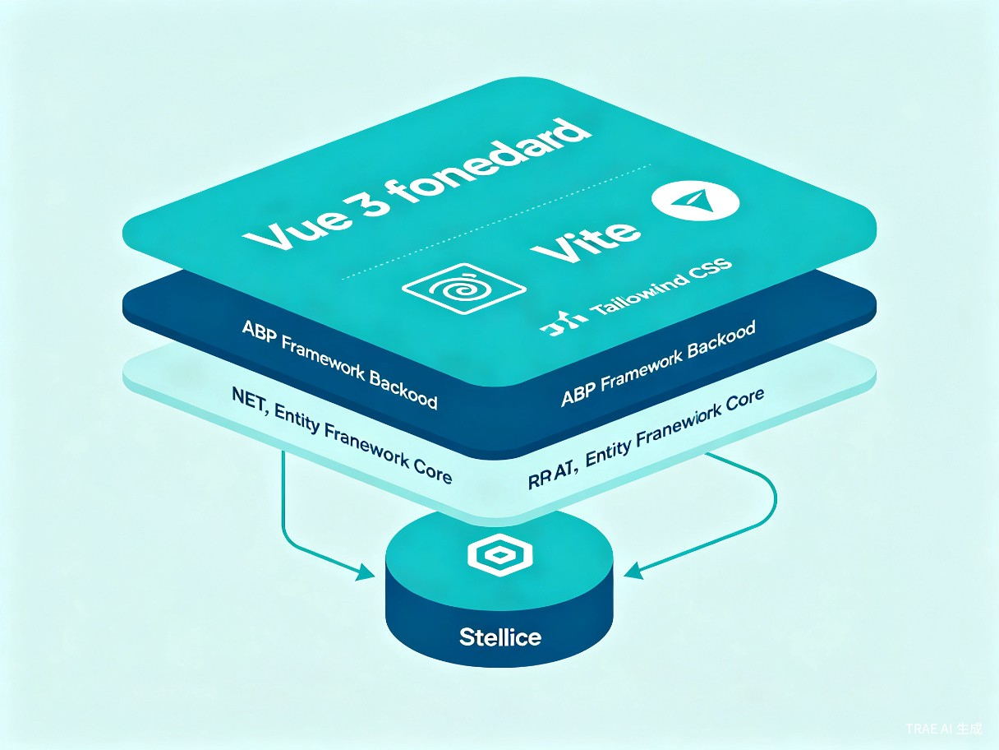

一个面向全民的海洋生物百科图鉴 Web 应用，让每个人都能轻松探索海底世界的奇妙生物
本项目是一个海洋生物百科图鉴 Web 应用，旨在为普通用户、鱼类爱好者、亲子家庭以及教育工作者提供一个直观、美观、信息丰富的海洋生物知识平台。应用内置了数十种真实鱼类的完整百科数据，涵盖热带鱼、海洋鱼、温带鱼三大分类，每种鱼都包含中英文名称、学名、科属、分布区域、栖息环境、体长、寿命、食性、适宜水温与 pH 值等详尽信息，并标注了 IUCN 保护等级。
想解决什么问题：目前市面上缺乏一个既美观又信息丰富的中文海洋生物百科平台。现有的鱼类百科信息分散在维基百科、专业论坛等处，普通用户（尤其是儿童和青少年）难以快速获取直观、系统的海洋生物知识，更缺乏对海洋生物保护现状的认知。
灵感来源："乐思编程"团队在教学中发现，孩子们对海洋生物充满好奇，但缺乏一个友好、有趣的中文平台来满足他们的探索欲。我们希望用技术力量打造一个"数字水族馆"，让每个人都能在浏览器中畅游海底世界，同时唤起公众对海洋生态保护的关注。
产品形态：一个基于 Vue 3 + ABP Framework 构建的响应式 Web 应用，包含公开浏览端（海洋生物图鉴）和管理后台端（鱼类数据管理），支持 PC 和移动端访问。

按热带鱼、海洋鱼、温带鱼三大分类浏览，支持二级子分类筛选，卡片式展示鱼类信息
点击卡片查看鱼类完整百科：科属、分布、栖息地、体长、寿命、食性、水温、pH 等
为每种鱼标注 IUCN 保护等级（无危/易危/濒危），提升海洋保护意识
全套海洋渐变配色、气泡动画、波浪背景、鱼儿游泳动效，沉浸式视觉体验
完美适配 PC、平板和手机，随时随地探索海洋世界
支持鱼类数据的增删改查、分类管理、图片上传，灵活维护百科内容


家长希望找到有趣、安全的内容与孩子一起学习海洋知识，培养孩子对自然的热爱
中小学自然科学教师需要直观的海洋生物教学素材，学生需要课外拓展知识
养鱼爱好者需要查询鱼类的适宜水温、pH 值、食性等养护信息

后端采用 ABP Framework 的完整 DDD（领域驱动设计）分层架构，包含 Domain、Application、HttpApi、EntityFrameworkCore、Web 五层，确保代码的高内聚低耦合。前端使用 Vue 3 Composition API + Tailwind CSS 构建响应式 SPA，自定义海洋主题色系（ocean-*），配合气泡动画、波浪背景等视觉特效，打造沉浸式海洋体验。
权限控制方面，读取接口匿名开放（方便公众浏览），写入接口通过 OpenIddict OAuth 2.0 进行身份认证，权限粒度精确到 Create/Edit/Delete 操作级别。
将分散的海洋生物知识整合为一个系统化、视觉化的中文百科平台，降低知识获取门槛。内置数十种真实鱼类的完整百科数据（中英文名、学名、科属、分布、栖息地、体长、寿命、食性、水温、pH），开箱即用。为中小学自然科学教育提供直观的教学辅助工具，也为水族爱好者提供实用的鱼类养护参考。
| 数据维度 | 规模 | 说明 |
|---|---|---|
| 一级分类 | 3 个 | 热带鱼、海洋鱼、温带鱼 |
| 二级子分类 | 14 个 | 神仙鱼、灯鱼、珊瑚礁鱼、鲸豚类等 |
| 鱼类条目 | 数十种 | 小丑鱼、蓝唐王鱼、大白鲨、鲸鲨、蓝鲸、虎鲸等 |
| 每条百科字段 | 15+ 个 | 中英文名、学名、科属、分布、栖息地、体长、寿命、食性、水温、pH、保护状态、特征标签等 |
| 鲸豚类专区 | 10 种 | 蓝鲸、虎鲸、座头鲸、抹香鲸、白鲸、中华白海豚等 |